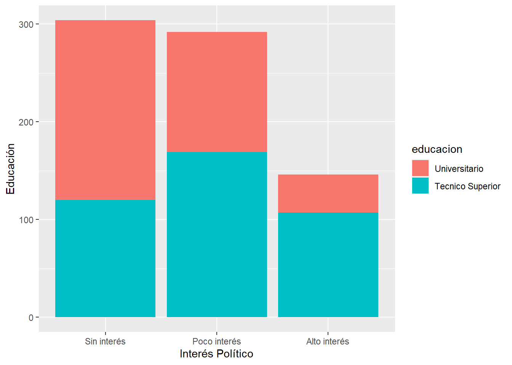
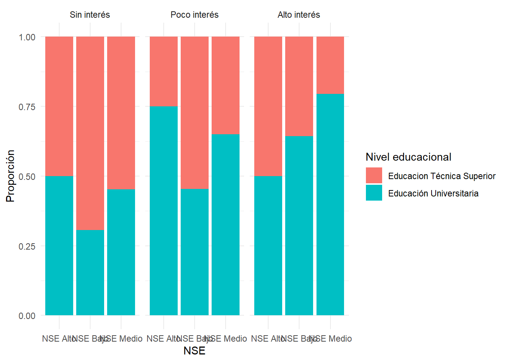

rm(list=ls())
options(scipen=999)Desigualdad y Participación Política
“Tendencias de Desigualdad y Participación Política: Estudiantes Universitarios en Chile”
En el Chile actual, la desigualdad social y la estratificación económica han emergido como temas de alta relevancia sociológica, planteando desafíos significativos para la cohesión social y la justicia distributiva en las sociedades contemporáneas. La percepción de la desigualdad juega un papel crucial en la configuración de actitudes y comportamientos sociales y políticos de los individuos, y su impacto se refleja de manera notable en la participación política de la población.
La educación cívica y la política educativa se presentan como herramientas fundamentales para abordar esta problemática, ya que contribuyen a la formación de ciudadanos informados y comprometidos con el bienestar colectivo. En este contexto, comprender la relación entre la percepción de la desigualdad, la educación cívica y la participación política de estudiantes universitarios adquiere una relevancia particular, ya que estos jóvenes representan una parte importante de la población activa en la esfera política.
En este estudio, se propone analizar cómo la percepción de la desigualdad social influye en la participación política de los estudiantes universitarios en Chile. Diversas investigaciones indican que la participación política está estrechamente relacionada con el estatus socioeconómico, siendo aquellos con un nivel socioeconómico más alto más propensos a involucrarse en el sistema político.(Castillo et al. 2014) La desigualdad social en Chile ha sido un tema recurrente que ha generado tensiones y debates en la sociedad, contribuyendo a la fragmentación social y a la percepción de injusticia entre diferentes estratos de la población. Esta disparidad socioeconómica no solo ha impactado en la calidad de vida de los ciudadanos, sino también en su participación política y en la legitimidad de las instituciones democráticas.
Además, en la literatura existe una creciente preocupación por las menores tasas de participación electoral entre las cohortes de edad más joven. Por ejemplo, un estudio (Marc Hooghe et al. 2013) investigó la disposición a votar entre adolescentes de 14 años de 22 países europeos y encontró que, si bien la disposición a votar sigue siendo elevada en este grupo de edad, existe una clara división de género. Las niñas son más propensas a afirmar que votarán, mientras que los niños se ven más a sí mismos como futuros candidatos electorales. Un clima de aula abierta en la escuela contribuye a la voluntad de votar en futuras elecciones. Sin embargo, elementos que impactan en la participación de adultos no tienen un efecto significativo en la intención de votar entre adolescentes, lo que sugiere que la menor tasa de participación observada entre los más jóvenes no puede atribuirse simplemente a una falta de motivación política, sino que deben considerarse otros elementos para explicar esta tendencia a la baja.
“La evidencia empírica ha demostrado consistentemente que la participación política está relacionada positivamente con el entorno socioeconómico. Además, investigaciones recientes sugieren que los niños que provienen de familias de bajo estatus ya están menos dispuestos a involucrarse políticamente.” (Juan Carlos Castillo et al. 2015)
Ligado a lo anterior, las influencias positivas de condiciones socioeconómicas más favorables representan un aumento del 36% en los puntajes de las pruebas escolares. Estos hallazgos sugieren que en el sistema educativo chileno, caracterizado por su segregación socioeconómica, estos efectos podrían contribuir a ampliar la brecha en el rendimiento académico en el ámbito de la educación cívica entre los estudiantes de escuelas con mayores recursos y aquellos con menos recursos. Además, este estudio revela que, en promedio, los estudiantes con un estatus socioeconómico más elevado son más susceptibles a estas influencias, y que los efectos de la composición socioeconómica son más pronunciados en el sector privado subvencionado que en el sector público. (Diego Collado et al. 2015)
En ese sentido, la hipótesis central que orientará esta investigación es que a medida que aumenta el nivel de percepción de la desigualdad social entre los estudiantes universitarios, también aumenta su participación política. Se espera que la percepción de la desigualdad social actúe como un predictor principal de la participación política de estos jóvenes, motivándolos a comprometerse activamente en la esfera política para abogar por cambios sociales y económicos.
Para efectos de este trabajo, utilizaré datos obtenidos a través del Estudio Longuitudinal de Chile (ELSOC_ola2016), con el fin de observar como se comporta la participación política de los universitarios en Chile. Para ello, se considerarán aquellas personas que cursen una institución de educación superior, separandolos por Educación Técnica y Educación Universitaria.
Trabajo en R:
Ajustes Iniciales
Cargar Paquetes
pacman::p_load(sjlabelled,
dplyr, #Manipulacion de datos
stargazer, #Tablas
sjmisc, # Tablas
summarytools, # Tablas
kableExtra, #Tablas
sjPlot, #Tablas y gráficos
corrplot, # Correlaciones
sessioninfo, # Información de la sesión de trabajo
ggplot2)# Para la mayoría de los gráficos Cargar Base
load("Input/proc_data.RData")Eliminamos casos perdidos
proc_data <- proc_data %>% set_na(., na = c(-999, -888))
proc_data <- na.omit(proc_data)Procesamiento de Variables
#Procesamiento de Variables
proc_data <- proc_data %>% set_na(., na = c(-999, -888))
proc_data <- na.omit(proc_data)
proc_data <-as.data.frame(proc_data)
stargazer(proc_data, type="text")
=======================================
Statistic N Mean St. Dev. Min Max
---------------------------------------
m0_sexo 1,805 1.603 0.489 1 2
m0_edad 1,805 45.050 15.238 18 80
m01 1,805 5.587 2.191 1 10
c08_01 1,805 1.719 1.025 1 5
c08_02 1,805 1.396 0.867 1 5
c08_03 1,805 1.253 0.712 1 5
c08_04 1,805 1.869 1.268 1 5
c12_01 1,805 1.510 0.793 1 3
c12_03 1,805 1.074 0.327 1 3
c12_08 1,805 1.076 0.355 1 3
c13 1,805 1.837 1.143 1 5
c15 1,805 7.367 3.960 0 12
c22 1,805 1.598 1.022 1 5
c33 1,805 2.345 0.815 1 5
---------------------------------------save(proc_data,file = "Input/proc_data.RData")
##Nivel educacional
frq(proc_data$m01)x <numeric>
# total N=1805 valid N=1805 mean=5.59 sd=2.19
Value | N | Raw % | Valid % | Cum. %
--------------------------------------
1 | 13 | 0.72 | 0.72 | 0.72
2 | 143 | 7.92 | 7.92 | 8.64
3 | 168 | 9.31 | 9.31 | 17.95
4 | 230 | 12.74 | 12.74 | 30.69
5 | 509 | 28.20 | 28.20 | 58.89
6 | 70 | 3.88 | 3.88 | 62.77
7 | 276 | 15.29 | 15.29 | 78.06
8 | 138 | 7.65 | 7.65 | 85.71
9 | 220 | 12.19 | 12.19 | 97.89
10 | 38 | 2.11 | 2.11 | 100.00
<NA> | 0 | 0.00 | <NA> | <NA>proc_data$m01 <- car::recode(proc_data$m01, "c(1,2,3,4,5)=1; c(6,7)=2; c(8,9,10)=3")
proc_data$m01 <- factor(proc_data$m01,
labels = c("Educacion Técnica Superior", "Educación Universitaria"),
levels = c(2, 3))
proc_data <- rename(proc_data,"educacion"=m01)
get_label(proc_data$educacion)NULLproc_data$educacion <- set_label(x = proc_data$educacion,label = "Educación")
frq(proc_data$educacion)Educación (x) <categorical>
# total N=1805 valid N=742 mean=1.53 sd=0.50
Value | N | Raw % | Valid % | Cum. %
------------------------------------------------------------
Educacion Técnica Superior | 346 | 19.17 | 46.63 | 46.63
Educación Universitaria | 396 | 21.94 | 53.37 | 100.00
<NA> | 1063 | 58.89 | <NA> | <NA>##Selección de muestra
proc_data <- proc_data %>%
filter(educacion %in% c("Educación Universitaria", "Educacion Técnica Superior"))
##NSE
frq(proc_data$c33)x <numeric>
# total N=742 valid N=742 mean=2.66 sd=0.74
Value | N | Raw % | Valid % | Cum. %
--------------------------------------
1 | 38 | 5.12 | 5.12 | 5.12
2 | 247 | 33.29 | 33.29 | 38.41
3 | 392 | 52.83 | 52.83 | 91.24
4 | 57 | 7.68 | 7.68 | 98.92
5 | 8 | 1.08 | 1.08 | 100.00
<NA> | 0 | 0.00 | <NA> | <NA>proc_data <- proc_data %>% rename("NSE"=c33)
frq(proc_data$NSE)x <numeric>
# total N=742 valid N=742 mean=2.66 sd=0.74
Value | N | Raw % | Valid % | Cum. %
--------------------------------------
1 | 38 | 5.12 | 5.12 | 5.12
2 | 247 | 33.29 | 33.29 | 38.41
3 | 392 | 52.83 | 52.83 | 91.24
4 | 57 | 7.68 | 7.68 | 98.92
5 | 8 | 1.08 | 1.08 | 100.00
<NA> | 0 | 0.00 | <NA> | <NA>proc_data$NSE <- set_label(proc_data$NSE, label = "Nivel Socioeconómico")
get_label(proc_data$NSE)[1] "Nivel Socioeconómico"proc_data$NSE <- ifelse(proc_data$NSE %in% c(1, 2), "NSE Bajo",
ifelse(proc_data$NSE %in% c(3, 4), "NSE Medio",
ifelse(proc_data$NSE == 5, "NSE Alto", NA)))
freq(proc_data$NSE)Frequencies
proc_data$NSE
Type: Character
Freq % Valid % Valid Cum. % Total % Total Cum.
--------------- ------ --------- -------------- --------- --------------
NSE Alto 8 1.08 1.08 1.08 1.08
NSE Bajo 285 38.41 39.49 38.41 39.49
NSE Medio 449 60.51 100.00 60.51 100.00
<NA> 0 0.00 100.00
Total 742 100.00 100.00 100.00 100.00##Sexo
frq(proc_data$m0_sexo)x <numeric>
# total N=742 valid N=742 mean=1.57 sd=0.50
Value | N | Raw % | Valid % | Cum. %
--------------------------------------
1 | 319 | 42.99 | 42.99 | 42.99
2 | 423 | 57.01 | 57.01 | 100.00
<NA> | 0 | 0.00 | <NA> | <NA>proc_data$m0_sexo <- car::recode(proc_data$m0_sexo, "1=0;2=1")
proc_data$m0_sexo <- factor(proc_data$m0_sexo,
labels=c( "Hombre",
"Mujer"),
levels=c(0,1))
proc_data <- rename(proc_data,"sexo"=m0_sexo)
get_label(proc_data$sexo)NULLproc_data$sexo <- set_label(x = proc_data$sexo,label = "Sexo")
frq(proc_data$sexo)Sexo (x) <categorical>
# total N=742 valid N=742 mean=1.57 sd=0.50
Value | N | Raw % | Valid % | Cum. %
---------------------------------------
Hombre | 319 | 42.99 | 42.99 | 42.99
Mujer | 423 | 57.01 | 57.01 | 100.00
<NA> | 0 | 0.00 | <NA> | <NA>##Edad
frq(proc_data$m0_edad)x <numeric>
# total N=742 valid N=742 mean=39.91 sd=14.47
Value | N | Raw % | Valid % | Cum. %
-------------------------------------
18 | 4 | 0.54 | 0.54 | 0.54
19 | 12 | 1.62 | 1.62 | 2.16
20 | 9 | 1.21 | 1.21 | 3.37
21 | 23 | 3.10 | 3.10 | 6.47
22 | 20 | 2.70 | 2.70 | 9.16
23 | 20 | 2.70 | 2.70 | 11.86
24 | 26 | 3.50 | 3.50 | 15.36
25 | 18 | 2.43 | 2.43 | 17.79
26 | 17 | 2.29 | 2.29 | 20.08
27 | 21 | 2.83 | 2.83 | 22.91
28 | 28 | 3.77 | 3.77 | 26.68
29 | 21 | 2.83 | 2.83 | 29.51
30 | 31 | 4.18 | 4.18 | 33.69
31 | 21 | 2.83 | 2.83 | 36.52
32 | 17 | 2.29 | 2.29 | 38.81
33 | 19 | 2.56 | 2.56 | 41.37
34 | 19 | 2.56 | 2.56 | 43.94
35 | 21 | 2.83 | 2.83 | 46.77
36 | 22 | 2.96 | 2.96 | 49.73
37 | 10 | 1.35 | 1.35 | 51.08
38 | 12 | 1.62 | 1.62 | 52.70
39 | 11 | 1.48 | 1.48 | 54.18
40 | 21 | 2.83 | 2.83 | 57.01
41 | 16 | 2.16 | 2.16 | 59.16
42 | 17 | 2.29 | 2.29 | 61.46
43 | 12 | 1.62 | 1.62 | 63.07
44 | 8 | 1.08 | 1.08 | 64.15
45 | 11 | 1.48 | 1.48 | 65.63
46 | 13 | 1.75 | 1.75 | 67.39
47 | 8 | 1.08 | 1.08 | 68.46
48 | 12 | 1.62 | 1.62 | 70.08
49 | 13 | 1.75 | 1.75 | 71.83
50 | 24 | 3.23 | 3.23 | 75.07
51 | 12 | 1.62 | 1.62 | 76.68
52 | 14 | 1.89 | 1.89 | 78.57
53 | 14 | 1.89 | 1.89 | 80.46
54 | 11 | 1.48 | 1.48 | 81.94
55 | 12 | 1.62 | 1.62 | 83.56
56 | 16 | 2.16 | 2.16 | 85.71
57 | 10 | 1.35 | 1.35 | 87.06
58 | 7 | 0.94 | 0.94 | 88.01
59 | 7 | 0.94 | 0.94 | 88.95
60 | 7 | 0.94 | 0.94 | 89.89
61 | 4 | 0.54 | 0.54 | 90.43
62 | 5 | 0.67 | 0.67 | 91.11
63 | 4 | 0.54 | 0.54 | 91.64
64 | 7 | 0.94 | 0.94 | 92.59
65 | 9 | 1.21 | 1.21 | 93.80
66 | 3 | 0.40 | 0.40 | 94.20
67 | 7 | 0.94 | 0.94 | 95.15
68 | 8 | 1.08 | 1.08 | 96.23
69 | 1 | 0.13 | 0.13 | 96.36
70 | 3 | 0.40 | 0.40 | 96.77
71 | 2 | 0.27 | 0.27 | 97.04
72 | 6 | 0.81 | 0.81 | 97.84
73 | 4 | 0.54 | 0.54 | 98.38
74 | 4 | 0.54 | 0.54 | 98.92
75 | 6 | 0.81 | 0.81 | 99.73
77 | 1 | 0.13 | 0.13 | 99.87
78 | 1 | 0.13 | 0.13 | 100.00
<NA> | 0 | 0.00 | <NA> | <NA>proc_data <- rename(proc_data,"edad"=m0_edad)
get_label(proc_data$edad)NULLproc_data$edad <- set_label(x = proc_data$edad,label = "Edad")
frq(proc_data$edad)Edad (x) <numeric>
# total N=742 valid N=742 mean=39.91 sd=14.47
Value | N | Raw % | Valid % | Cum. %
-------------------------------------
18 | 4 | 0.54 | 0.54 | 0.54
19 | 12 | 1.62 | 1.62 | 2.16
20 | 9 | 1.21 | 1.21 | 3.37
21 | 23 | 3.10 | 3.10 | 6.47
22 | 20 | 2.70 | 2.70 | 9.16
23 | 20 | 2.70 | 2.70 | 11.86
24 | 26 | 3.50 | 3.50 | 15.36
25 | 18 | 2.43 | 2.43 | 17.79
26 | 17 | 2.29 | 2.29 | 20.08
27 | 21 | 2.83 | 2.83 | 22.91
28 | 28 | 3.77 | 3.77 | 26.68
29 | 21 | 2.83 | 2.83 | 29.51
30 | 31 | 4.18 | 4.18 | 33.69
31 | 21 | 2.83 | 2.83 | 36.52
32 | 17 | 2.29 | 2.29 | 38.81
33 | 19 | 2.56 | 2.56 | 41.37
34 | 19 | 2.56 | 2.56 | 43.94
35 | 21 | 2.83 | 2.83 | 46.77
36 | 22 | 2.96 | 2.96 | 49.73
37 | 10 | 1.35 | 1.35 | 51.08
38 | 12 | 1.62 | 1.62 | 52.70
39 | 11 | 1.48 | 1.48 | 54.18
40 | 21 | 2.83 | 2.83 | 57.01
41 | 16 | 2.16 | 2.16 | 59.16
42 | 17 | 2.29 | 2.29 | 61.46
43 | 12 | 1.62 | 1.62 | 63.07
44 | 8 | 1.08 | 1.08 | 64.15
45 | 11 | 1.48 | 1.48 | 65.63
46 | 13 | 1.75 | 1.75 | 67.39
47 | 8 | 1.08 | 1.08 | 68.46
48 | 12 | 1.62 | 1.62 | 70.08
49 | 13 | 1.75 | 1.75 | 71.83
50 | 24 | 3.23 | 3.23 | 75.07
51 | 12 | 1.62 | 1.62 | 76.68
52 | 14 | 1.89 | 1.89 | 78.57
53 | 14 | 1.89 | 1.89 | 80.46
54 | 11 | 1.48 | 1.48 | 81.94
55 | 12 | 1.62 | 1.62 | 83.56
56 | 16 | 2.16 | 2.16 | 85.71
57 | 10 | 1.35 | 1.35 | 87.06
58 | 7 | 0.94 | 0.94 | 88.01
59 | 7 | 0.94 | 0.94 | 88.95
60 | 7 | 0.94 | 0.94 | 89.89
61 | 4 | 0.54 | 0.54 | 90.43
62 | 5 | 0.67 | 0.67 | 91.11
63 | 4 | 0.54 | 0.54 | 91.64
64 | 7 | 0.94 | 0.94 | 92.59
65 | 9 | 1.21 | 1.21 | 93.80
66 | 3 | 0.40 | 0.40 | 94.20
67 | 7 | 0.94 | 0.94 | 95.15
68 | 8 | 1.08 | 1.08 | 96.23
69 | 1 | 0.13 | 0.13 | 96.36
70 | 3 | 0.40 | 0.40 | 96.77
71 | 2 | 0.27 | 0.27 | 97.04
72 | 6 | 0.81 | 0.81 | 97.84
73 | 4 | 0.54 | 0.54 | 98.38
74 | 4 | 0.54 | 0.54 | 98.92
75 | 6 | 0.81 | 0.81 | 99.73
77 | 1 | 0.13 | 0.13 | 99.87
78 | 1 | 0.13 | 0.13 | 100.00
<NA> | 0 | 0.00 | <NA> | <NA>##Participación Política
proc_data <- proc_data %>% rename("apoyo_causa"=c08_01,
"part_marcha"=c08_02,
"part_huelga"=c08_03,
"rrss_pol"=c08_04)
proc_data$apoyo_causa <- set_label(x = proc_data$apoyo_causa,label = "Participación: Apoya Causa")
get_label(proc_data$apoyo_causa)[1] "Participación: Apoya Causa"proc_data$part_marcha <- set_label(x = proc_data$part_marcha, label = "Participación: Marcha")
get_label(proc_data$part_marcha)[1] "Participación: Marcha"proc_data$part_huelga <- set_label(x = proc_data$part_huelga, label = "Participación: Huelga")
get_label(proc_data$part_huelga)[1] "Participación: Huelga"proc_data$rrss_pol <- set_label(x = proc_data$rrss_pol, label = "Participación: RRSS")
get_label(proc_data$rrss_pol)[1] "Participación: RRSS"frq(proc_data$apoyo_causa)Participación: Apoya Causa (x) <numeric>
# total N=742 valid N=742 mean=1.90 sd=1.06
Value | N | Raw % | Valid % | Cum. %
--------------------------------------
1 | 385 | 51.89 | 51.89 | 51.89
2 | 106 | 14.29 | 14.29 | 66.17
3 | 197 | 26.55 | 26.55 | 92.72
4 | 45 | 6.06 | 6.06 | 98.79
5 | 9 | 1.21 | 1.21 | 100.00
<NA> | 0 | 0.00 | <NA> | <NA>frq(proc_data$part_marcha)Participación: Marcha (x) <numeric>
# total N=742 valid N=742 mean=1.64 sd=1.01
Value | N | Raw % | Valid % | Cum. %
--------------------------------------
1 | 494 | 66.58 | 66.58 | 66.58
2 | 74 | 9.97 | 9.97 | 76.55
3 | 128 | 17.25 | 17.25 | 93.80
4 | 36 | 4.85 | 4.85 | 98.65
5 | 10 | 1.35 | 1.35 | 100.00
<NA> | 0 | 0.00 | <NA> | <NA>frq(proc_data$part_huelga)Participación: Huelga (x) <numeric>
# total N=742 valid N=742 mean=1.37 sd=0.83
Value | N | Raw % | Valid % | Cum. %
--------------------------------------
1 | 602 | 81.13 | 81.13 | 81.13
2 | 36 | 4.85 | 4.85 | 85.98
3 | 77 | 10.38 | 10.38 | 96.36
4 | 23 | 3.10 | 3.10 | 99.46
5 | 4 | 0.54 | 0.54 | 100.00
<NA> | 0 | 0.00 | <NA> | <NA>frq(proc_data$rrss_pol)Participación: RRSS (x) <numeric>
# total N=742 valid N=742 mean=2.31 sd=1.39
Value | N | Raw % | Valid % | Cum. %
--------------------------------------
1 | 347 | 46.77 | 46.77 | 46.77
2 | 55 | 7.41 | 7.41 | 54.18
3 | 159 | 21.43 | 21.43 | 75.61
4 | 125 | 16.85 | 16.85 | 92.45
5 | 56 | 7.55 | 7.55 | 100.00
<NA> | 0 | 0.00 | <NA> | <NA>proc_data$apoyo_causa <- factor(proc_data$apoyo_causa,
levels = c(1, 2, 3, 4, 5),
labels = c("Poco", "Poco", "Algo", "Mucha", "Mucha"))
proc_data$part_marcha <- factor(proc_data$part_marcha,
levels = c(1, 2, 3, 4, 5),
labels = c("Poco", "Poco", "Algo", "Mucha", "Mucha"))
proc_data$part_huelga <- factor(proc_data$part_huelga,
levels = c(1, 2, 3, 4, 5),
labels = c("Poco", "Poco", "Algo", "Mucha", "Mucha"))
proc_data$rrss_pol <- factor(proc_data$rrss_pol,
levels = c(1, 2, 3, 4, 5),
labels = c("Poco", "Poco", "Algo", "Mucha", "Mucha"))
##Membresías
proc_data <- proc_data %>% rename("pert_jdv"=c12_01,
"pert_pp"=c12_03,
"pert_cde"=c12_08)
proc_data$pert_jdv <- set_label(proc_data$pert_jdv, label = "Pertenece: Junta de vecinos")
get_label(proc_data$pert_jdv)[1] "Pertenece: Junta de vecinos"proc_data$pert_pp <- set_label(proc_data$pert_pp, label = "Pertenece: Partido Político")
get_label(proc_data$pert_pp)[1] "Pertenece: Partido Político"proc_data$pert_cde <- set_label(proc_data$pert_cde, label = "Pertenece: Centro de estudiantes")
get_label(proc_data$pert_cde)[1] "Pertenece: Centro de estudiantes"frq(proc_data$pert_jdv)Pertenece: Junta de vecinos (x) <numeric>
# total N=742 valid N=742 mean=1.40 sd=0.73
Value | N | Raw % | Valid % | Cum. %
--------------------------------------
1 | 557 | 75.07 | 75.07 | 75.07
2 | 75 | 10.11 | 10.11 | 85.18
3 | 110 | 14.82 | 14.82 | 100.00
<NA> | 0 | 0.00 | <NA> | <NA>frq(proc_data$pert_pp)Pertenece: Partido Político (x) <numeric>
# total N=742 valid N=742 mean=1.10 sd=0.38
Value | N | Raw % | Valid % | Cum. %
--------------------------------------
1 | 688 | 92.72 | 92.72 | 92.72
2 | 33 | 4.45 | 4.45 | 97.17
3 | 21 | 2.83 | 2.83 | 100.00
<NA> | 0 | 0.00 | <NA> | <NA>frq(proc_data$pert_cde)Pertenece: Centro de estudiantes (x) <numeric>
# total N=742 valid N=742 mean=1.13 sd=0.45
Value | N | Raw % | Valid % | Cum. %
--------------------------------------
1 | 683 | 92.05 | 92.05 | 92.05
2 | 25 | 3.37 | 3.37 | 95.42
3 | 34 | 4.58 | 4.58 | 100.00
<NA> | 0 | 0.00 | <NA> | <NA>proc_data$pert_jdv <- factor(proc_data$pert_jdv,
levels = c(1, 2, 3),
labels = c("No", "Si", "Si"))
proc_data$pert_pp <- factor(proc_data$pert_pp,
levels = c(1, 2, 3),
labels = c("No", "Si", "Si"))
proc_data$pert_cde <- factor(proc_data$pert_cde,
levels = c(1, 2, 3),
labels = c("No", "Si", "Si"))
##Interés en la política
proc_data <- proc_data %>% rename("interes_pol"=c13)
frq(proc_data$interes_pol)x <numeric>
# total N=742 valid N=742 mean=2.24 sd=1.29
Value | N | Raw % | Valid % | Cum. %
--------------------------------------
1 | 304 | 40.97 | 40.97 | 40.97
2 | 148 | 19.95 | 19.95 | 60.92
3 | 144 | 19.41 | 19.41 | 80.32
4 | 99 | 13.34 | 13.34 | 93.67
5 | 47 | 6.33 | 6.33 | 100.00
<NA> | 0 | 0.00 | <NA> | <NA>proc_data$interes_pol <- set_label(proc_data$interes_pol, label = "Interés Político")
get_label(proc_data$interes_pol)[1] "Interés Político"proc_data$interes_pol <- factor(proc_data$interes_pol,
levels = c(1, 2, 3, 4, 5),
labels = c("Sin interés", "Poco interés", "Poco interés", "Alto interés", "Alto interés"))
##Autoubicación Política
proc_data <- proc_data %>% rename("autoubic_pol"=c15)
frq(proc_data$autoubic_pol)x <numeric>
# total N=742 valid N=742 mean=6.77 sd=3.74
Value | N | Raw % | Valid % | Cum. %
--------------------------------------
0 | 33 | 4.45 | 4.45 | 4.45
1 | 14 | 1.89 | 1.89 | 6.33
2 | 42 | 5.66 | 5.66 | 11.99
3 | 47 | 6.33 | 6.33 | 18.33
4 | 62 | 8.36 | 8.36 | 26.68
5 | 183 | 24.66 | 24.66 | 51.35
6 | 40 | 5.39 | 5.39 | 56.74
7 | 44 | 5.93 | 5.93 | 62.67
8 | 29 | 3.91 | 3.91 | 66.58
9 | 5 | 0.67 | 0.67 | 67.25
10 | 40 | 5.39 | 5.39 | 72.64
11 | 39 | 5.26 | 5.26 | 77.90
12 | 164 | 22.10 | 22.10 | 100.00
<NA> | 0 | 0.00 | <NA> | <NA>proc_data$autoubic_pol <- set_label(proc_data$autoubic_pol, label = "Ubicación Política")
get_label(proc_data$autoubic_pol)[1] "Ubicación Política"proc_data$autoubic_pol <- car::recode(proc_data$autoubic_pol, "c(0,1,2,3)=1; c(4,5,6)=2; c(7,8,9,10)=3; c(11,12)=4")
proc_data$autoubic_pol <- factor(proc_data$autoubic_pol,
labels = c("Izquierda", "Centro", "Educacion superior", "Ninguna"),
levels = c(1, 2, 3, 4))
##Participación en Movimientos Sociales
proc_data <- proc_data %>% rename("part_movsoc"=c22)
proc_data$part_movsoc <- set_label(x = proc_data$part_movsoc,label = "Participación: Movimientos Sociales")
get_label(proc_data$part_movsoc)[1] "Participación: Movimientos Sociales"proc_data$part_movsoc <- car::recode(proc_data$part_movsoc,
"1:2 = 1;
3 = 2;
4:5 = 3")
proc_data$part_movsoc <- factor(proc_data$part_movsoc,
labels = c("Baja", "Alta"),
levels = c(1, 2))
frq(proc_data$part_movsoc)x <categorical>
# total N=742 valid N=659 mean=1.23 sd=0.42
Value | N | Raw % | Valid % | Cum. %
--------------------------------------
Baja | 506 | 68.19 | 76.78 | 76.78
Alta | 153 | 20.62 | 23.22 | 100.00
<NA> | 83 | 11.19 | <NA> | <NA>Descriptivos
dim(proc_data)[1] 742 14sjmisc::descr(proc_data)
sjmisc::descr(proc_data,
show = c("label","range", "mean", "sd", "NA.prc", "n"))%>%
kable(.,"markdown")
summarytools::dfSummary(proc_data, plain.ascii = FALSE)
view(dfSummary(proc_data, headings=FALSE))Switching method to 'browser'Output file written: C:\Users\sivim\AppData\Local\Temp\RtmpMxl3pq\file2bdc159ccbf.html?(caption)
## Basic descriptive statistics
var type label n NA.prc mean sd se md trimmed
sexo categorical Sexo 742 0.00 1.57 0.50 0.02 2 1.59
edad numeric Edad 742 0.00 39.91 14.47 0.53 37 38.79
educacion categorical Educación 742 0.00 1.53 0.50 0.02 2 1.54
apoyo_causa categorical apoyo_causa 742 0.00 1.41 0.62 0.02 1 1.30
part_marcha categorical part_marcha 742 0.00 1.30 0.58 0.02 1 1.17
part_huelga categorical part_huelga 742 0.00 1.18 0.47 0.02 1 1.05
rrss_pol categorical rrss_pol 742 0.00 1.70 0.84 0.03 1 1.63
pert_jdv categorical pert_jdv 742 0.00 1.25 0.43 0.02 1 1.19
pert_pp categorical pert_pp 742 0.00 1.07 0.26 0.01 1 1.00
pert_cde categorical pert_cde 742 0.00 1.08 0.27 0.01 1 1.00
interes_pol categorical interes_pol 742 0.00 1.79 0.75 0.03 2 1.73
autoubic_pol categorical autoubic_pol 742 0.00 2.52 1.08 0.04 2 2.53
part_movsoc categorical part_movsoc 659 11.19 1.23 0.42 0.02 1 1.17
range iqr skew
1 (1-2) 1 -0.28
60 (18-78) 22 0.56
1 (1-2) 1 -0.14
2 (1-3) 1 1.25
2 (1-3) 0 1.81
2 (1-3) 0 2.69
2 (1-3) 1 0.61
1 (1-2) 0 1.16
1 (1-2) 0 3.30
1 (1-2) 0 3.11
2 (1-3) 1 0.37
3 (1-4) 2 0.16
1 (1-2) 0 1.27| var | label | n | NA.prc | mean | sd | range | |
|---|---|---|---|---|---|---|---|
| 13 | sexo | Sexo | 742 | 0.00000 | 1.570081 | 0.4953983 | 1 (1-2) |
| 3 | edad | Edad | 742 | 0.00000 | 39.913747 | 14.4691248 | 60 (18-78) |
| 4 | educacion | Educación | 742 | 0.00000 | 1.533693 | 0.4992000 | 1 (1-2) |
| 1 | apoyo_causa | apoyo_causa | 742 | 0.00000 | 1.411051 | 0.6230279 | 2 (1-3) |
| 7 | part_marcha | part_marcha | 742 | 0.00000 | 1.296496 | 0.5770824 | 2 (1-3) |
| 6 | part_huelga | part_huelga | 742 | 0.00000 | 1.176550 | 0.4673871 | 2 (1-3) |
| 12 | rrss_pol | rrss_pol | 742 | 0.00000 | 1.702156 | 0.8354305 | 2 (1-3) |
| 10 | pert_jdv | pert_jdv | 742 | 0.00000 | 1.249326 | 0.4329148 | 1 (1-2) |
| 11 | pert_pp | pert_pp | 742 | 0.00000 | 1.072776 | 0.2599441 | 1 (1-2) |
| 9 | pert_cde | pert_cde | 742 | 0.00000 | 1.079515 | 0.2707231 | 1 (1-2) |
| 5 | interes_pol | interes_pol | 742 | 0.00000 | 1.787062 | 0.7495890 | 2 (1-3) |
| 2 | autoubic_pol | autoubic_pol | 742 | 0.00000 | 2.522911 | 1.0792551 | 3 (1-4) |
| 8 | part_movsoc | part_movsoc | 659 | 11.18598 | 1.232170 | 0.4225376 | 1 (1-2) |
### Data Frame Summary
#### proc_data
**Label:** Estudio Longitudinal Social de Chile. Ola 2016. Version 4.00 (10/06/2020)
**Dimensions:** 742 x 14
**Duplicates:** 8
-----------------------------------------------------------------------------------------------------------------------------------
No Variable Label Stats / Values Freqs (% of Valid) Graph Valid Missing
---- --------------- ----------- -------------------------------- -------------------- ----------------------- ---------- ---------
1 sexo\ Sexo 1\. Hombre\ 319 (43.0%)\ IIIIIIII \ 742\ 0\
[factor] 2\. Mujer 423 (57.0%) IIIIIIIIIII (100.0%) (0.0%)
2 edad\ Edad Mean (sd) : 39.9 (14.5)\ 60 distinct values \ \ : .\ 742\ 0\
[numeric] min < med < max:\ : : :\ (100.0%) (0.0%)
18 < 37 < 78\ : : : : . :\
IQR (CV) : 22 (0.4) : : : : : : :\
: : : : : : : : : .
3 educacion\ Educación 1\. Educacion Técnica Superio\ 346 (46.6%)\ IIIIIIIII \ 742\ 0\
[factor] 2\. Educación Universitaria 396 (53.4%) IIIIIIIIII (100.0%) (0.0%)
4 apoyo_causa\ 1\. Poco\ 491 (66.2%)\ IIIIIIIIIIIII \ 742\ 0\
[factor] 2\. Algo\ 197 (26.5%)\ IIIII \ (100.0%) (0.0%)
3\. Mucha 54 ( 7.3%) I
5 part_marcha\ 1\. Poco\ 568 (76.5%)\ IIIIIIIIIIIIIII \ 742\ 0\
[factor] 2\. Algo\ 128 (17.3%)\ III \ (100.0%) (0.0%)
3\. Mucha 46 ( 6.2%) I
6 part_huelga\ 1\. Poco\ 638 (86.0%)\ IIIIIIIIIIIIIIIII \ 742\ 0\
[factor] 2\. Algo\ 77 (10.4%)\ II \ (100.0%) (0.0%)
3\. Mucha 27 ( 3.6%)
7 rrss_pol\ 1\. Poco\ 402 (54.2%)\ IIIIIIIIII \ 742\ 0\
[factor] 2\. Algo\ 159 (21.4%)\ IIII \ (100.0%) (0.0%)
3\. Mucha 181 (24.4%) IIII
8 pert_jdv\ 1\. No\ 557 (75.1%)\ IIIIIIIIIIIIIII \ 742\ 0\
[factor] 2\. Si 185 (24.9%) IIII (100.0%) (0.0%)
9 pert_pp\ 1\. No\ 688 (92.7%)\ IIIIIIIIIIIIIIIIII \ 742\ 0\
[factor] 2\. Si 54 ( 7.3%) I (100.0%) (0.0%)
10 pert_cde\ 1\. No\ 683 (92.0%)\ IIIIIIIIIIIIIIIIII \ 742\ 0\
[factor] 2\. Si 59 ( 8.0%) I (100.0%) (0.0%)
11 interes_pol\ 1\. Sin interés\ 304 (41.0%)\ IIIIIIII \ 742\ 0\
[factor] 2\. Poco interés\ 292 (39.4%)\ IIIIIII \ (100.0%) (0.0%)
3\. Alto interés 146 (19.7%) III
12 autoubic_pol\ 1\. Izquierda\ 136 (18.3%)\ III \ 742\ 0\
[factor] 2\. Centro\ 285 (38.4%)\ IIIIIII \ (100.0%) (0.0%)
3\. Educacion superior\ 118 (15.9%)\ III \
4\. Ninguna 203 (27.4%) IIIII
13 part_movsoc\ 1\. Baja\ 506 (76.8%)\ IIIIIIIIIIIIIII \ 659\ 83\
[factor] 2\. Alta 153 (23.2%) IIII (88.8%) (11.2%)
14 NSE\ 1\. NSE Alto\ 8 ( 1.1%)\ \ 742\ 0\
[character] 2\. NSE Bajo\ 285 (38.4%)\ IIIIIII \ (100.0%) (0.0%)
3\. NSE Medio 449 (60.5%) IIIIIIIIIIII
-----------------------------------------------------------------------------------------------------------------------------------Como se observa en la tabla, la muestra final está compuesta en un 43% por hombres y un 57% de mujeres. El promedio de edad es de 39,9 años, con una desviación estándar de 14,5 años. La distribución de la muestra es bastante amplia, abarcando desde los 18 a los 78 años. Podemos ver que la mayoría de estudiantes seleccionados tienen educación universitaria (53,4%), en comparación a la educación técnica superior que es del 46,6%. En el resto de variables que abarcan participación política, la mayoría de los estudiantes reportan poco apoyo a causas (66.2%), poca participación en marchas (76.5%), poca participación en huelgas (86.0%), y poco uso de redes sociales para fines políticos (54.2%). Respecto a la pertenencia, la mayoría de los estudiantes no son miembros de juntas de vecinos (75.1%), partidos políticos (92.7%), ni centros de estudiantes (92.0%). Alrededor del 41.0% de los estudiantes reportan poco interés político, mientras que el 39.4% reporta algo de interés y el 19.7% reporta alto interés. La mayoría de los estudiantes se ubican en el centro político (38.4%) o no se ubican en ninguna posición política específica (27.4%). La mayoría de los estudiantes reportan una participación baja en movimientos sociales (76.8%). Finalmente, la mayoría de los estudiantes ienen un nivel socioeconómico medio (60.5%), seguido por un 38.4% con nivel socioeconómico bajo y solo un pequeño porcentaje (1.1%) con nivel socioeconómico alto.
Gráficos Univariados
# Gráficos univariados.
#| label: fig-gdp
#| fig-cap: “Educacion e Interés político”
graph1 <- proc_data %>% ggplot(aes(x = interes_pol, fill = educacion)) +
geom_bar() +
xlab("Interés Político") +
ylab("Educación") +
labs(fill="educacion")+
scale_fill_discrete(labels = c('Universitario','Tecnico Superior'))
graph1
En este gráfico podemos observar que quieres menos presentan interés político son los estudiantes universitarios, y quienes presentan un alto interés son los estudiantes de educación técnico superior.
# Gráficos univariados.
#| label: fig-gdp
#| fig-cap: “Educacion, Interés político y NSE”
graph2 <- ggplot(proc_data, aes(x = NSE, fill = educacion)) +
geom_bar(position = "fill") +
facet_wrap(~ interes_pol) +
labs(x = "NSE", y = "Proporción", fill = "Nivel educacional") +
theme_minimal()
graph2
Al incluir la variable de nivel socioeconómico en el análisis, se observa que los estudiantes de educación universitaria con un NSE medio muestran el mayor interés político, mientras que los estudiantes de educación técnica superior con un NSE bajo muestran el menor interés político. Esto sugiere que el nivel socioeconómico puede influir en el grado de interés político de los estudiantes, independientemente de su nivel educativo.
El estudio sobre las tendencias de desigualdad y participación política entre estudiantes universitarios en Chile destaca la compleja interacción entre factores sociales, económicos y educativos en la configuración de actitudes políticas y comportamientos cívicos. La desigualdad social y económica en Chile no solo afecta la calidad de vida de los ciudadanos, sino que también influye en su participación política y en la percepción de las instituciones democráticas.
La educación cívica emerge como una herramienta esencial para abordar estas desigualdades y fomentar la participación ciudadana informada. Sin embargo, el estudio sugiere que el nivel socioeconómico también desempeña un papel significativo en el grado de interés político de los estudiantes, lo que subraya la importancia de considerar el contexto socioeconómico al analizar la participación política de los jóvenes.
La hipótesis planteada en el estudio, que sugiere que una mayor percepción de la desigualdad social entre los estudiantes universitarios se relaciona con una mayor participación política, abre nuevas vías de investigación sobre cómo los jóvenes responden a las disparidades socioeconómicas y buscan influir en el cambio social y económico a través de la acción política.
References
Castillo, Juan C, Daniel Miranda, Macarena Bonhomme, Cristián Cox, and Martín Bascopé. 2014. “Social Inequality and Changes in Students’ Expected Political Participation in Chile.” Education, Citizenship and Social Justice 9 (2): 140–56. https://doi.org/10.1177/1746197914520650.
Diego Collado, Diego Collado, Catalina Lomos, Catalina Lomos, Idès Nicaise, and Ides Nicaise. 2015. “The Effects of Classroom Socioeconomic Composition on Student’s Civic Knowledge in Chile.” School Effectiveness and School Improvement 26 (3): 415–40. https://doi.org/10.1080/09243453.2014.966725.
Juan Carlos Castillo, Juan Carlos Castillo, Daniel Miranda, Daniel Miranda, Macarena Bonhomme, Macarena Bonhomme, Cristián Cox, Cristián Cox, Martín Bascopé, and Martín Bascopé. 2015. “Mitigating the Political Participation Gap from the School: The Roles of Civic Knowledge and Classroom Climate.” Journal of Youth Studies 18 (1): 16–35. https://doi.org/10.1080/13676261.2014.933199.
Marc Hooghe, Ruth Dassonneville, Ruth Dassonneville, and Marc Hooghe. 2013. “Voters and Candidates of the Future: The Intention of Electoral Participation Among Adolescents in 22 European Countries:” 21 (1): 1–28. https://doi.org/10.1177/1103308812467664.